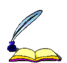

Evandro L. T. P. Cunha
(Evandro Landulfo Teixeira Paradela Cunha)
This page in English
Olá! Sou professor na Faculdade de Letras da Universidade Federal de Minas Gerais (FALE/UFMG), onde coordeno o ADA: Núcleo de Linguística Computacional. Fui Fulbright Visiting Scholar na Portland State University (2023), fellow da 4th Intercontinental Academia (2021-22) e pesquisador visitante no Max-Planck-Institut für evolutionäre Anthropologie (2014-15). Sou doutor em Linguística pela Universiteit Leiden e em Ciência da Computação pela UFMG, e atualmente realizo pesquisas que englobam linguística, computação e neurociência, sobretudo nos seguintes temas: interfaces cérebro-computador, interação humano-máquina, linguística histórica computacional, linguística forense computacional e comunicação mediada por computadores. Também leciono disciplinas e oriento pesquisas nas áreas de italiano e linguística aplicada. Caso tenha interesse nos meus temas de pesquisa e queira colaborar em um dos meus projetos, fique à vontade para entrar em contato!
![[Foto de Evandro Cunha]](imgs/evandro10.jpg)
Publicações e apresentações
• Google Acadêmico
ABPI: slides e artigo
Áreas e projetos de pesquisa
• Interfaces cérebro-computador: sistemas de interface cérebro-computador para comunicação aumentativa e alternativa.
• Interação humano-máquina: interação linguística entre humanos e robôs/assistentes virtuais inteligentes.
• Linguística histórica computacional: compilação e análise de corpora diacrônicos e históricos; modelagem e simulação computacional da variação e mudança linguística.
• Linguística forense computacional: análise de autoria; métodos computacionais para a linguística investigativa e pericial.
• Comunicação mediada por computadores: coleta e análise de dados linguísticos provenientes da web; desinformação, manipulação e extremismo na internet.
• Linguística românica: línguas italianas no Brasil (projeto Lita-Bra); línguas românicas minoritárias.
Grupos institucionais
• 4th Intercontinental Academia (ICA4)
• ADA: Núcleo de Linguística Computacional (FALE/UFMG)
• Área de Italiano da FALE/UFMG
Ensino
• Lista completa de disciplinas ministradas na graduação e na pós-graduação
Currículo
• Em português (Currículo Lattes)
• Em inglês (pdf)
Agenda 2030 da ONU
Estou conectado aos Objetivos de Desenvolvimento Sustentável da Agenda 2030 da ONU e identifico meu trabalho atual especialmente com os objetivos 3. Saúde e Bem-Estar, 4. Educação de Qualidade e 16. Paz, Justiça e Instituições Eficazes.
![[3. Saúde e Bem-Estar]](imgs/SDG-3.svg)
![[4. Educação de Qualidade]](imgs/SDG-4.svg)
![[16. Paz, Justiça e Instituições Eficazes]](imgs/SDG-16.svg)
Contato

E-mails: cunhae@ufmg.br / evandro.cunha@fulbrightmail.org
Endereço: Faculdade de Letras da UFMG. Av. Antônio Carlos, 6627 - Campus Pampulha. CEP: 31270-901. Belo Horizonte, MG, Brasil
Gabinete: L 4012. Tel. (gabinete): +55 31 3409-6054. Escaninho (sala dos professores): 116 (me escreva caso você coloque alguma coisa lá)
Academia.edu,
GitHub,
Google Acadêmico,
Lattes,
LinkedIn,
ORCID,
Research Gate,
Twitter
Atualizado em 2025, inspirado nos anos 90.